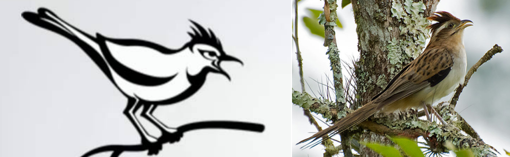

Cuckoo Sandbox Analisis Malware¶
Kelompok 2 - RKSBlue¶
Disusun oleh:
Dedek Wahyu Avyansyah
Fajar Sofar
Gifni Hammam Muyasar Permadi
Muhammad Jamil Daulima
Tiara Anggita Yudhistira
Daftar isi:
- Pengenalan
- Instalasi
- (1) Instalansi Librari Python pada Ubuntu/Debian
- (2) Pembuatan Web Interface Cuckoo
- (3) Instalasi dan Pengaturan Virtualbox
- (4) Instalasi dan Pengaturan Cuckoo-Virtualvenv.sh
- (5) Instalasi Cuckoo dan VM Cloack
- (6) Automatic VM Creation
- (7) Konfigurasi Cuckoo
- (8) Pengaturan Jaringan dan Konfigurasi Routing
- (9) Menjalankan Cuckoo
- Penggunaan
- Pengembangan
- Catatan